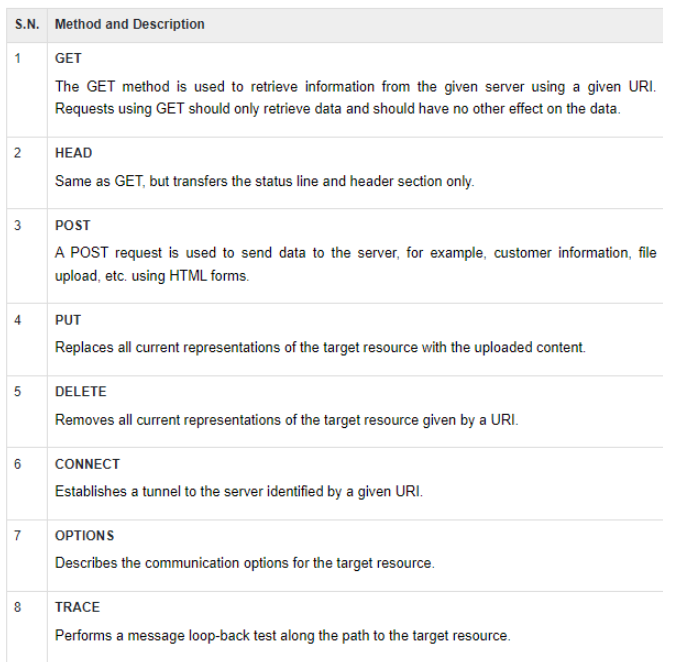

https://www.bol.com/nl/p/hoe-werkt-dat-nou/9200000057347012/?country=BE&suggestionType=browse#product_alternatives
protocol: https
host: bol.com
subdomain: www
port: 443
path: nl/p/hoe-werkt-dat-nou/9200000057347012/
parameters: ?country=BE&suggestionType=browse#product_alternatives
we moesten in netwerk kijken naar deze html pagina
heading stylessoorten resources:
de requests werden naar verschillende servers gestuurd.
aan de status
ja
updateinformatie die telkens kijkt of er nieuwe mails zijn.
de pagina was niet gevonden
dat het hier gefaald was om de pagina op te halen
je kan via netwerk de method opvragen van elk element
get.
post
zouden dat al vooraf opgeslaan zijn.
61 requests
2MB in 6.5s
het laade sneller omdat de data al van vooraf was opgeslagen.
het is vooraf gezegt wat wel en niet cashed mag worden en voor hoelang
ik tel 4 verschillende layouts: